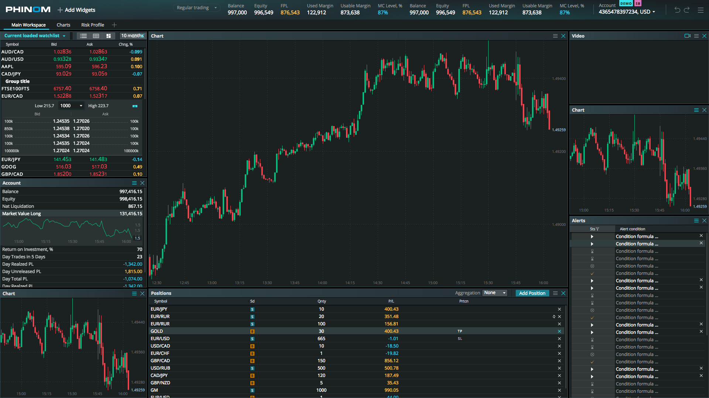
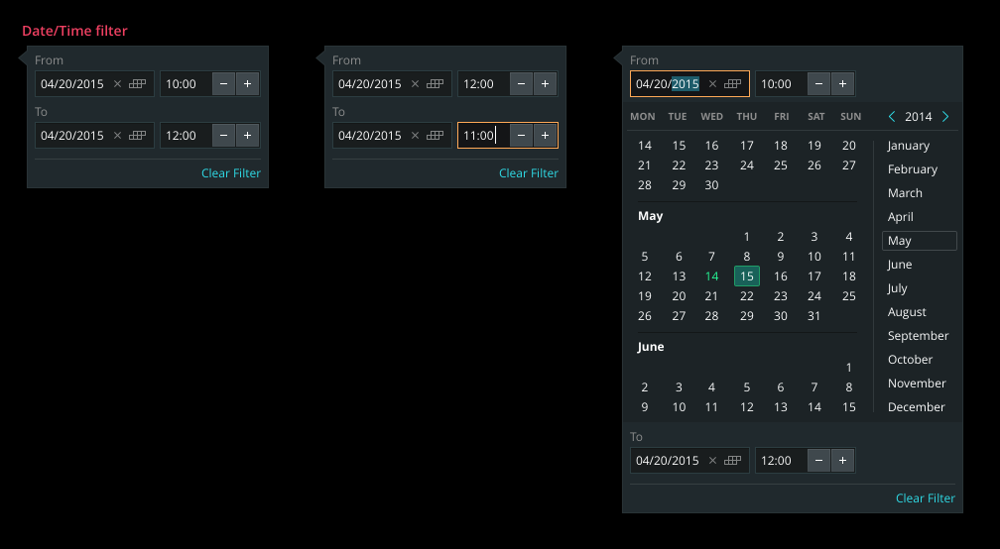

Дизайн спецификации, которые мы получаем от дизайн-команды →Разработка статического прототипа согласно спецификации (FrontEnd-команда) →Окончательная верстка + добавление функциональности (RIA-команда) →Тестирование (QA) → Production...
DX-Trade
Технологии, использованные при создании прототипа:
React JS
BEM
Vanilla JS
Gedik
Технологии, использованные при создании прототипа:
Handelbars
BEM
Vanilla JS
Phinom
Технологии, использованные при создании прототипа:
React JS
CSS modules
Vanilla JS

TOS Learning Center
Технологии, использованные при создании прототипа:
React JS
CSS modules
Vanilla JS
В production используются react-компоненты, которые вставляются в верстку шаблонов CMS.
Проблема переиспользуемости компонентов как ее решал Walmart
Проблема переиспользуемости компонентов как ее решал Walmart
Компоненты должны версионироваться, легко устанавливаться и обновляться.
Все компоненты находятся во внутреннем npm реестре, что позволяет использовать
определенные их версии не боясь, что приложение поломается.
Необходимо соблюдать согласованную структуру в пакетах и стандарты для сотен компонентов.
Electrode и React Storybook
UI-Kit что это и зачем он нужен
UI-элементы
UI-элементы. Должны выглядеть одинаково на любой платформе
UI-элементы. Иногда их просто нет среди стандартных

От Css к CSS-модулям
CSS — начало
SASS
SASS превратил CSS в язык программирования, для препроцессингового движка реализующего в таблицах стилей
вложенность, переменные, миксины, расширения и логику. Так что стало возможным лучше организовывать CSS-файлы
разбивая огромную простыню CSS-кода по более мелким файлам.
БЭМ
При использовании этой методологии мы можем быть уверены что className уникален и что за счет соглашения Block,
Element, Modificator мы снижаем риск специфического отображения.
БЭМ — не все так гладко
Процедура выбора className стала очень кропотливой и отнимает достаточно большое количество времени.
Длинные имена классов раздувают разметку.
Необходимо явно расширять каждый компонент интерфейса при каждом повторном использовании.
Излишне семантическая разметка.
БЭМ — не все так гладко
CSS-модули
Динамическое создание имен классов для каждого локально заданного стиля.
CSS-модули являются способом автоматизации BEM-нотации за счёт
генерирования уникального className, которое не станет конфликтовать ни с одним другим, даже если будет
использоваться одно и то же имя.